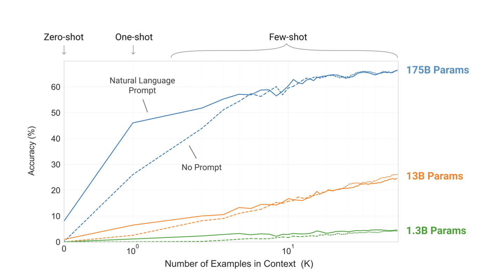
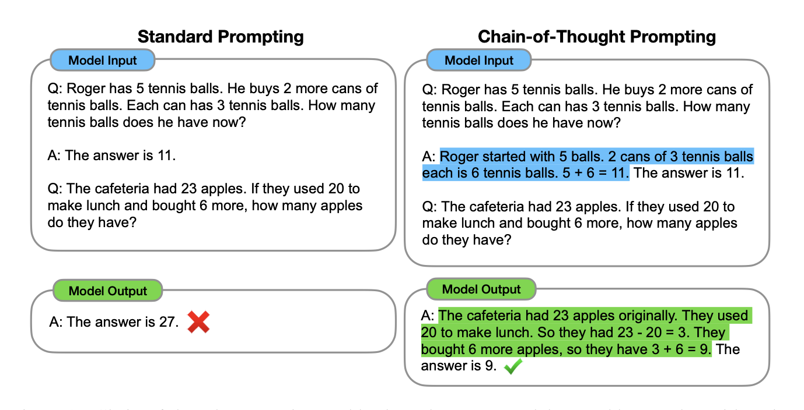
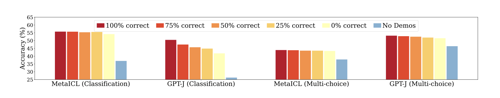
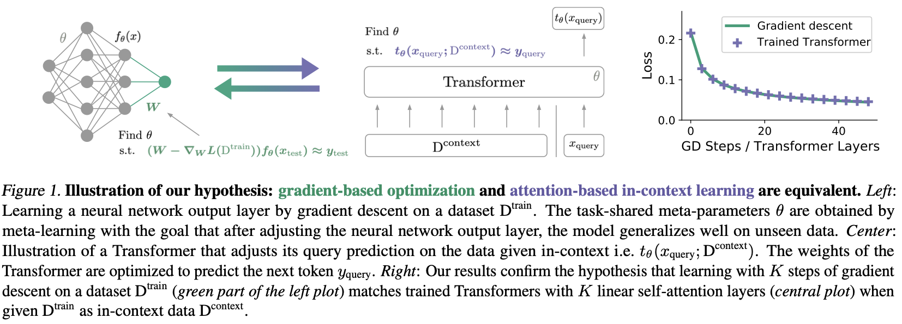
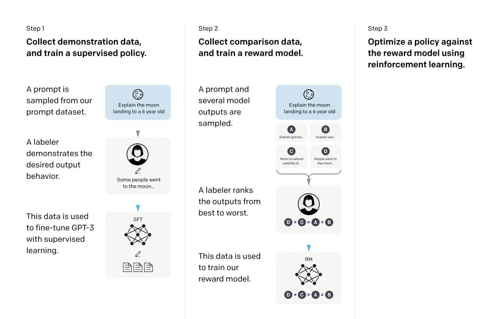
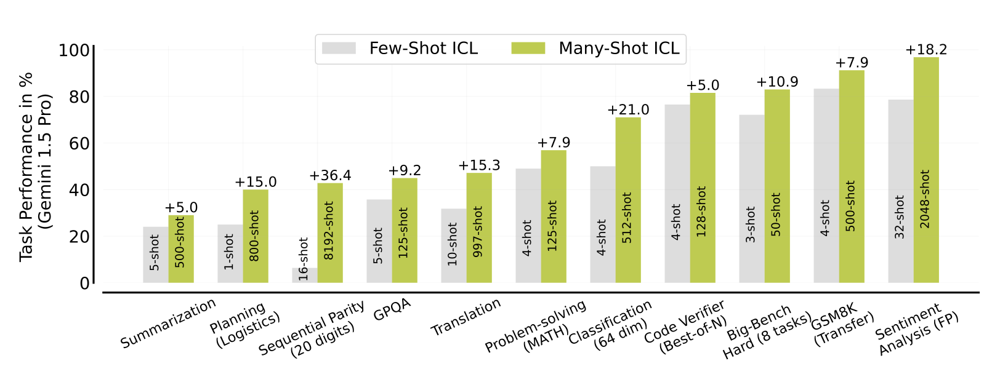

The Magic Trick
Here's a simple experiment you can try right now. Ask an LLM to solve a moderately tricky arithmetic problem—say, multi-step word problems involving fractions. Watch it stumble. Now, paste three solved examples before your question. Same model. Same weights. Same frozen parameters.
It solves it perfectly.
No gradient updates. No backpropagation. No optimizer step. The model's weights are literally identical before and after. And yet—it behaves as if it just learned something new.
This is the paradox at the heart of in-context learning, and it has quietly become one of the most important phenomena in modern AI.
When OpenAI released GPT-3 in 2020, the headline wasn't just "bigger model." It was this: a 175-billion parameter model could rival fine-tuned systems just by seeing a handful of examples in the prompt.

Few-shot learning performance scales dramatically with model size. Larger models show remarkable improvements with just 1-5 examples in context, approaching fine-tuned performance without any weight updates.
The implications were staggering. We had spent years building elaborate training pipelines—curating datasets, tuning hyperparameters, running expensive fine-tuning jobs. And here was a model that could approximate all of that... with a few sentences of context.
But this raises a question we still haven't fully answered:
If the weights don't change, what is changing?
It's Not Just Answers, It's Thinking
The mystery deepens when you look closer at what kind of examples work.
The naive assumption: Give the model correct answers, and it will copy them.
The reality: Giving only answers produces modest improvements. But giving reasoning steps—showing the model how to think—produces dramatic gains.
Wei et al. demonstrated something remarkable: when you show a model step-by-step reasoning traces before a question, its performance on complex reasoning tasks can jump by 20-40+ percentage points.

Standard prompting vs. chain-of-thought prompting on grade school math (GSM8K). The visual contrast is stark: accuracy jumps from ~18% to ~57% on PaLM 540B simply by demonstrating reasoning steps.
The model isn't copying answers. It's copying processes.
This is the first conceptual shift:
Few-shot learning is not about injecting information. It's about behavioral imitation.
You're not teaching the model new facts. You're showing it a style of reasoning, and it mirrors that style on novel problems.
Think of it like this: you're not uploading data to a hard drive. You're demonstrating a dance, and the model follows your choreography.
The Wrong Explanation (And Why It Fails)
At this point, the intuitive explanation seems obvious:
The model is treating examples like mini-training data. It extracts patterns from them, generalizes, and applies those patterns to new inputs.
This explanation is compelling. It's also wrong.
Min et al. conducted a beautifully counterintuitive experiment. They took few-shot prompts and flipped the labels—giving deliberately wrong answers in the demonstrations.
If the model were "learning" from examples like training data, this should destroy performance. Wrong labels should teach wrong patterns.
But that's not what happened.

Surprising result: random labels degrade performance only moderately, while removing demonstrations entirely hurts much more. The gap between correct and random labels is smaller than expected.
Key findings:
- Performance dropped, but not catastrophically
- The format and structure of demonstrations mattered more than their correctness
- Even with random labels, the model still benefited from seeing the task structure
This is a profound result. It tells us:
The model isn't extracting factual patterns from demonstrations. It's extracting procedural templates.
If few-shot learning were true learning, wrong answers should be poison. But they're more like... noise. The signal is in the structure, not the content.
The Hidden Mechanism
So if examples aren't data, what are they?
Let's go deeper into the machinery.
A series of remarkable papers have shown that transformer attention layers can implicitly simulate gradient descent. The mathematical structure of self-attention, under certain conditions, implements optimization steps.

Conceptual diagram showing how attention layers can be interpreted as gradient descent steps. The forward pass implements implicit optimization on an internal objective.
This reframes everything:
| Traditional Learning | In-Context Learning |
|---|---|
| Explicit gradient computation | Implicit gradient via attention |
| Weight updates | Activation pattern shifts |
| Permanent changes | Temporary, context-bound changes |
The model isn't "frozen" in the way we thought. It's running a shadow optimization process inside its forward pass.
But this raises the real question—the one that will anchor the rest of this blog:
If the model is optimizing, what is it optimizing for?
In traditional training, we have a loss function. We have a reward signal. We have an explicit objective.
In few-shot prompting, we have... examples.
So what role are those examples playing?
The Big Twist: Examples as Reward Functions
Here's the reframing that changed how I think about this entire phenomenon:
Few-shot examples don't act like training data. They act like reward functions.
Let me unpack this.
In reinforcement learning from human feedback (RLHF), we train an explicit reward model. Humans label outputs as good or bad. The model learns to maximize that reward signal.
But look at what few-shot prompting does:
- You show examples of "good" outputs
- The model shifts its behavior toward similar outputs
- No explicit scoring—but clear preference signals

Comparing RLHF (explicit reward model → optimization) with few-shot prompting (demonstrated trajectories → implicit behavioral shift). The structural parallel reveals few-shot as a form of reward shaping.
The Analogy:
| RLHF | Few-Shot Prompting |
|---|---|
| Explicit reward model | Implicit preference via examples |
| Scalar reward signal | Demonstrated trajectories |
| Trained optimization | Forward-pass optimization |
| Permanent policy shift | Temporary behavioral bias |
In RLHF, we say: "This output scores 0.8. Optimize toward it."
In few-shot, we say: "Here's what good looks like. Now do something similar."
My Refined Claim:
Few-shot examples are not rewards—but they shape the reward landscape the model implicitly follows.
They define:
- What reasoning style is preferred
- What output format is expected
- What level of detail is appropriate
- What tone is desired
The model doesn't receive a scalar reward. But it receives something arguably richer: full trajectories of high-reward behavior.
Instead of saying "this answer scores 9/10," you're saying "here's what a 10/10 answer looks like in full detail."
The Fragility (Breaking the Illusion)
Now I have to be honest about the limits of this analogy.
If few-shot examples were robust reward functions, they should produce stable, reliable improvements. But they don't.
Study after study has shown that in-context learning is fragile.
The fragility of in-context learning visualized. Small perturbations—reordering examples, changing formatting, or adding irrelevant context—can cause accuracy drops of 15-30+ percentage points. If examples were true reward functions, they should be robust. They're not.
Known fragilities:
- Order sensitivity: Changing the order of few-shot examples can shift accuracy by 15+ points
- Format sensitivity: Minor formatting changes break the spell
- Irrelevant context: Adding unrelated information disrupts reasoning
- Paraphrase sensitivity: Same meaning, different words → different performance
Interpretation:
If examples were true reward functions, they should be robust. Real reward signals don't flip when you reorder training data.
But few-shot examples are:
- Weak signals
- Local in their effect
- Temporary (gone when context clears)
- Highly sensitive to surface features
The "reward function" interpretation is a useful analogy, but it's an imperfect one. These are fragile, ephemeral, and context-dependent preference signals.
Scaling the Illusion
Despite this fragility, something remarkable is emerging.
What happens when you scale up the number of examples?
With modern context windows expanding to 100K+ tokens, researchers have tested what happens with hundreds or thousands of examples in context.

Many-shot scaling curves showing continued improvement with hundreds to thousands of examples. Performance approaches fine-tuning levels on certain tasks, blurring the line between prompting and training.
Key findings:
- Performance continues improving with more examples (no clear plateau)
- Many-shot ICL can match or approach fine-tuning on certain tasks
- The gap between "prompting" and "training" is narrowing
The Implication:
Few-shot learning was just the beginning. We're discovering that context itself can act like training.
The distinction we drew between "inference-time adaptation" and "training-time learning" is blurring. The forward pass is becoming a site of optimization.
The Deeper Problem (And A Path Forward)
So where does this leave us?
Few-shot works. Sometimes brilliantly. But it's inconsistent. Fragile. Unpredictable.
The problem, I believe, is not with the models. It's with how we represent the reasoning space.
The Current Paradigm:
We give models unstructured examples:
- "Here's problem A and solution A"
- "Here's problem B and solution B"
- "Now solve problem C"
And we hope the model extracts the right patterns.
The Problem:
This is like teaching someone to play chess by showing them three random games. They might pick up some patterns. But without understanding why moves are good—without structural knowledge of the game—they'll fail on novel positions.
A Better Approach:
What if instead of showing examples, we gave models structured reasoning environments?
- Explicit problem decomposition frameworks
- Abstract reasoning templates (not specific solutions)
- Discourse structures that guide logical flow
- Placeholder abstractions that generalize across problems
Instead of injecting "reward trajectories," we could inject "reward-generating structures."
This is where my own research interests connect. By formalizing the structure of reasoning—how premises connect, how arguments flow, how abstractions layer—we can make the implicit "reward signal" of demonstrations more stable and generalizable.
What We've Discovered
Let's step back and see what we've uncovered:
The Conceptual Shift
| What We Thought | What's Actually Happening |
|---|---|
| Models learn facts from examples | Models copy behavioral patterns |
| Examples are mini-training data | Examples are implicit preference signals |
| Weights must change for learning | Activations shift within frozen weights |
| More examples = more data | More examples = stronger behavioral prior |
| Prompting ≠ training | Prompting ≈ temporary training |
The Core Insight:
Few-shot learning works not because models learn new knowledge, but because we temporarily bend their reasoning space.
The examples we provide are not data points to memorize. They are behavioral attractors—temporary gravitational wells that pull the model's outputs toward desired patterns.
A prompt is not just input.
It is a temporary training algorithm.
The Mystery Remains
Every time you write a few-shot prompt, you are:
- Implicitly defining an objective function
- Demonstrating optimal trajectories
- Reshaping the model's behavioral landscape
- Running a shadow training process inside a single forward pass
And here's the humbling part:
The real mystery is not that LLMs can learn from a few examples... but that we still don't fully understand what kind of learning is happening at all.
We've built systems that surprise us. That exhibit capabilities we didn't explicitly program. That blur the lines between "inference" and "training" in ways we're only beginning to formalize.
The next frontier isn't just scaling models. It's understanding the strange, implicit optimization processes we've accidentally created—and learning to design prompts not as inputs, but as temporary minds.
References
- Brown, T., Mann, B., Ryder, N., et al. (2020). "Language Models are Few-Shot Learners." Advances in Neural Information Processing Systems (NeurIPS).
- Wei, J., Wang, X., Schuurmans, D., et al. (2022). "Chain-of-Thought Prompting Elicits Reasoning in Large Language Models." Advances in Neural Information Processing Systems (NeurIPS).
- Min, S., Lyu, X., Holtzman, A., et al. (2022). "Rethinking the Role of Demonstrations: What Makes In-Context Learning Work?" Proceedings of EMNLP.
- von Oswald, J., Niklasson, E., Randazzo, E., et al. (2023). "Transformers Learn In-Context by Gradient Descent." Proceedings of ICML.
- Ouyang, L., Wu, J., Jiang, X., et al. (2022). "Training Language Models to Follow Instructions with Human Feedback." Advances in Neural Information Processing Systems (NeurIPS).
- Bian, Y., Pei, J., Liu, T., et al. (2024). "Large Language Models Are Not Robust Reasoners." arXiv preprint.
- Agarwal, R., Vieillard, N., Stanczyk, P., et al. (2024). "Many-Shot In-Context Learning." arXiv preprint.